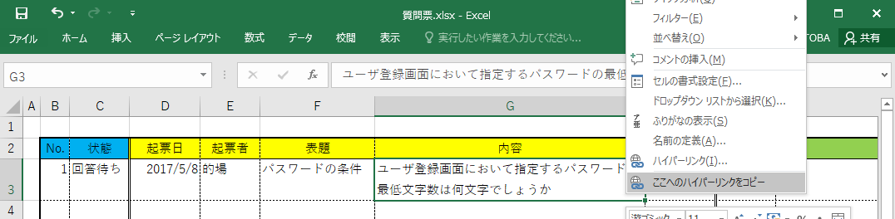

What is this? / これはなに?
microsoft excel を共有しているプロジェクトにおいて、コミュニケーションを円滑にするための、以下の機能をもったツールです:
- リンク生成機能: いま作業しているExcelの、そのシートのそのセルを特定するリンク文字列を生成します。
- リンク解決機能: 上記リンク文字列で指定されたExcelファイルを開き、指定されたシートの指定されたセルを選択状態にします。
How to use / 使いかた
- Excelを開き、指定したいセルを右クリックし、「ここへのハイパーリンクをコピー」を実行することで、クリップボードにリンク文字列が格納されます。

- バグチケットに記載する、メールに添付するなどしてチームメンバと共有してください。

- そのリンクを受け取った人は、そのリンク文字列をクリックするだけで、指定したブックの指定したシートのそのセルが選択された状態で開くことができ、すぐに着目することができます。
Objects that we can link / リンク先に指定できる場所
以下のオブジェクトをリンク先として指定できます:
- Excelのセル、行、列、シート、ファイル
- Excelの同一シート上の複数のセル、行、列(範囲、複数選択可)
- Powerpointのページ
- Powerpointのページ上のオブジェクト(複数選択可)
valiations / いろいろな使いかた
- Powerpoint資料をレビューする場合、「このオブジェクト」を明確に指定できます。
- Windowsエクスプローラー上で「ショートカットを作成」するとき、「項目の場所」にリンク文字列を指定することで、特定セルをすばやく開くことができます。